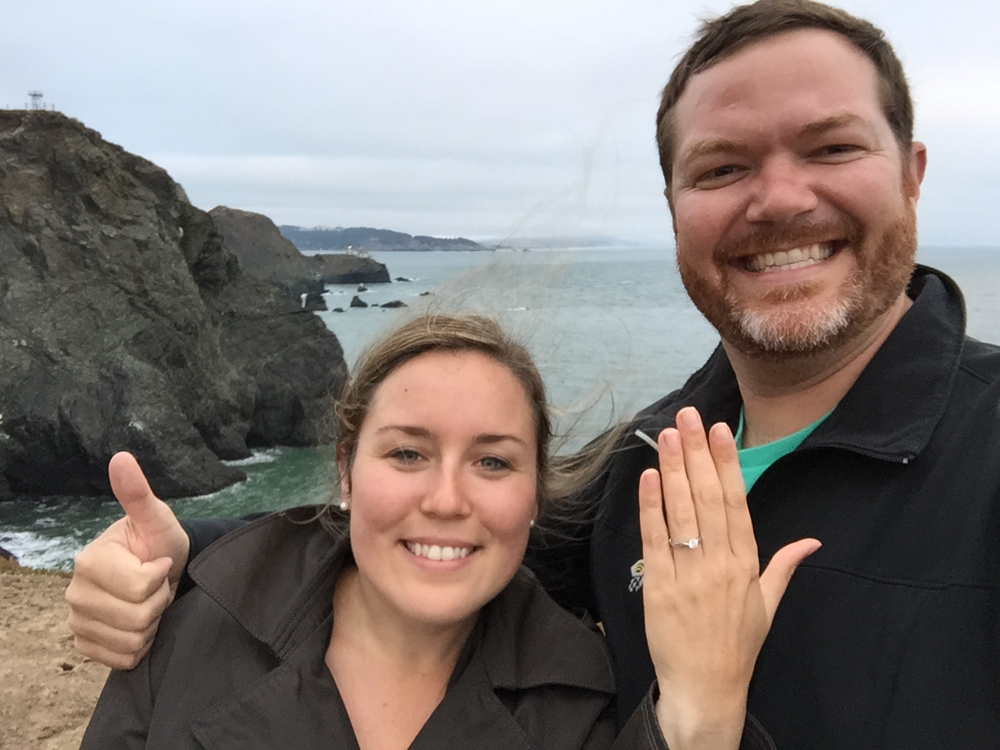

Thank you so much for visiting our wedding website!
We are so excited to celebrate our special day with
family and friends. This site will be home for details
about the festivities — we'll be updating it with whatever
helpful information we can find.
The Travel & Accommodations
section addresses many common questions. Of course,
feel free to ask us directly.
We will gather and proclaim our love and commitment,
with family and friends, near fresh water and forest.
Sunny days, cool nights, and a relaxed pace make this
remote destination an excellent place to rejuvenate and
spend quality time together.
(Optional) Fish Boil Dinner
Friday, June 24
5:00pm
School House Beach
Celebration Sharing & Performances
Friday, June 24
8:00pm
Nelsen's Hall & Bitters Pub
Wedding!
Greengate Farm
School House Beach
Nelsen's Hall & Bitters Pub
Greengate Farm
Washington Island Washington Island sits off the tip of Wisconsin's peninsula — between Lake Michigan and Green Bay — about two hours drive north from the city of Green Bay.
Accomodations
You'll need to book ahead. For a wide range of places to stay, please check the "accommodations" section at washingtonisland-wi.com. Many popular spots are already booking, so have a look soon!
Ferry Information
Ferry service carries cars and passengers to the Island daily 7:30am-6:45pm (late boats until 9:15 on Friday). Returning ferries run 6:45am-6:00pm (late boats until 7:30 on weekends). Try arriving 30 minutes early. You can navigate to the ferry dock by searching "Northport Door Peninsula." Detailed schedule and rates at wisferry.com.Driving the Peninsula
Once you get to Green Bay, take Highway 57 North to Sturgeon Bay. After "Sturge," if you might be late to the boat, you can turn to continue on 57 for a less-crowded east-side drive; or, you can go straight to join Highway 42 on the more touristy west side. The highways rejoin halfway up at Sister Bay and continue (with signage) to the ferry dock.Air Travel
Likely the best fares and flexibility will be into Chicago O'Hare (ORD), possibly Chicago Midway (MDW), or Milwaukee (MKE). Appleton (ATW) is closer and Green Bay (GRB) is closest. If you don't feel like renting a car, maybe we can match up some carpools.
Your love and support are all we need! But just in case,
we are registered at Bed Bath & Beyond and
HoneyFund.
Please send all boxed gifts to:
2935 San Mateo Apt 5
El Cerrito, CA 94530